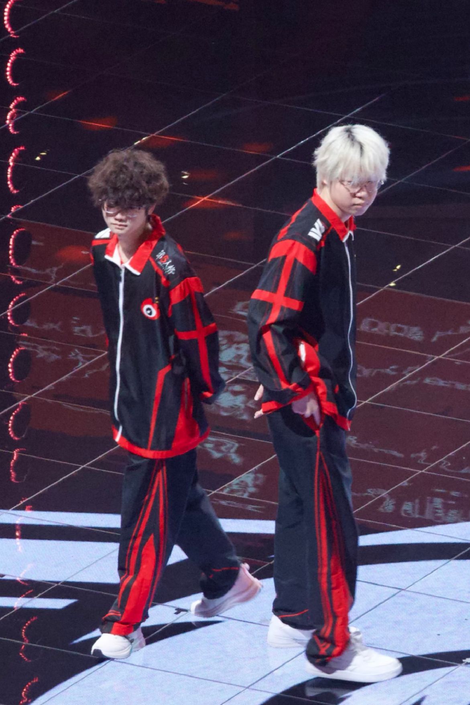

2025.05.27
博七正式集結
隨著 N1e 與 Koting 正式加入 WEIBO GAMING，Huiyi、Guoker、Persica、Koting 與 N1e 五位核心首發到齊，博七時期就此展開。
時期開始MEMORABLE MOMENTS
有些時刻不只是一場比賽的結果，也構成了博七共同走過的歷程。 這裡記錄五位首發在 2025 IVL 夏季賽至深淵的呼喚 IX 期間的重要事件。
2025.05.27
隨著 N1e 與 Koting 正式加入 WEIBO GAMING，Huiyi、Guoker、Persica、Koting 與 N1e 五位核心首發到齊，博七時期就此展開。
時期開始2025.08.24
博七五位核心首發共同征戰的第一個賽季，WBG 最終取得夏季賽亞軍。這不僅是隊伍共同努力的成果，也成為博七時期最高的聯賽榮譽。雖然充滿遺憾，卻也是希望的起點，誰也沒能想到，原來這就是博七最高的榮譽了。
最高聯賽榮譽2026.01.03
經歷夏季賽的高峰後，WBG 在秋季賽的表現出現明顯起伏，最終以第五名結束賽季。對博七而言，這是與夏季賽截然不同的一段歷程，也讓人開始感受到隊伍面臨的挑戰。
賽季轉折2026.04.19
全球總決賽小組賽最後一場，WBG 擊敗實力強勁的日本 RC，以四戰全勝取得 A 組第一，直接晉級八強。賽後，捏捏在採訪中說道：「八強只是起點。」這句話承載著隊伍與支持者對淘汰賽的期待，卻也在最終止步八強後，留下了難以言喻的遺憾。
深淵 IX・小組賽2026.05
隨著 Koting（空調）轉會，五位核心首發不再以原本的陣容共同征戰。從 2025 年五月正式集結，到 2026 年五月各奔前程，博七時期也正式畫下句點。曾經並肩作戰的隊友，往後將以不同的身分站在賽場上。
博七時期落幕